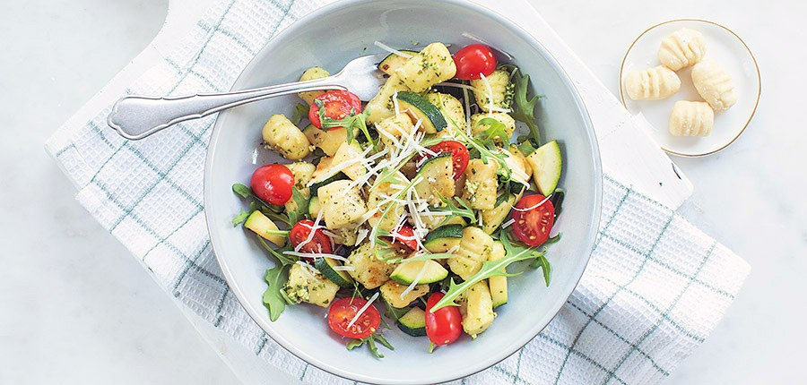

Gnocchi met pesto

Ingredienten
- 400 g gnocchi
- 1 kleine courgette
- 3 eetlepels parmezaanse kaas
- 2 eetlepels pesto
- 25 gram rucola
- 125 gram cherrytomaatjes
- snuf peper en zout
Bereiding
- snijd de courgette in stukjes. Bak deze kort in een pan met een snufje peper, zout en een klein beetje olie. Haal uit de pan
- Kook de gnocchi beetgaar, dit hoeft maar 1 of 2 minuutjes. Giet af en bak de gnocchi nog kort in de koekenpan zodat hij een kleur krijgt.
- Doe de gebakte gnocchi in een kom en voeg de pesto toe en roer door. Voeg courgette, cherrytomaatjes en rucola toe. Meng alles en voeg Parmezaanse kaas toe.